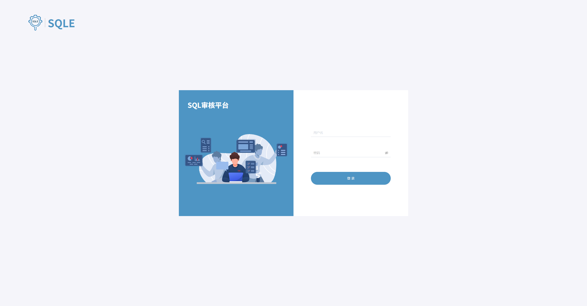
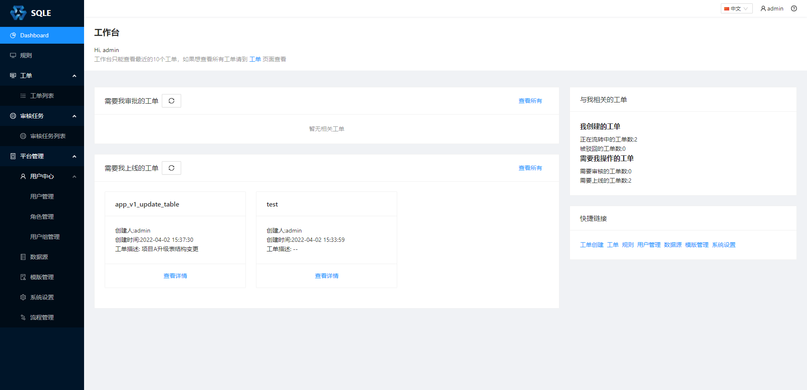
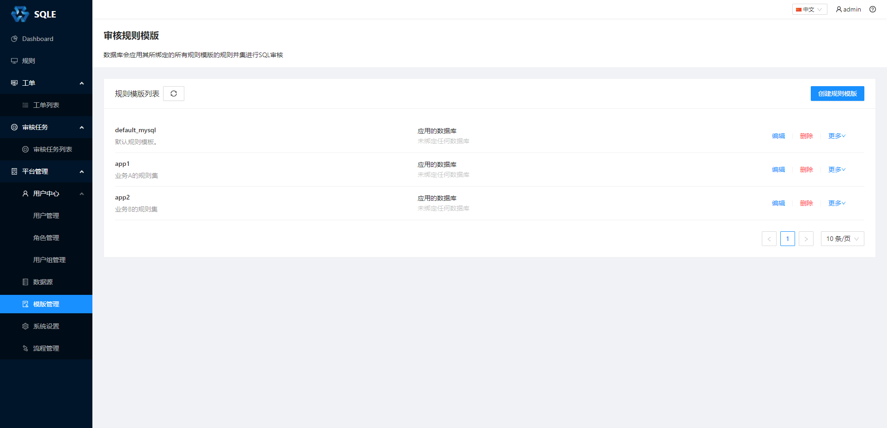
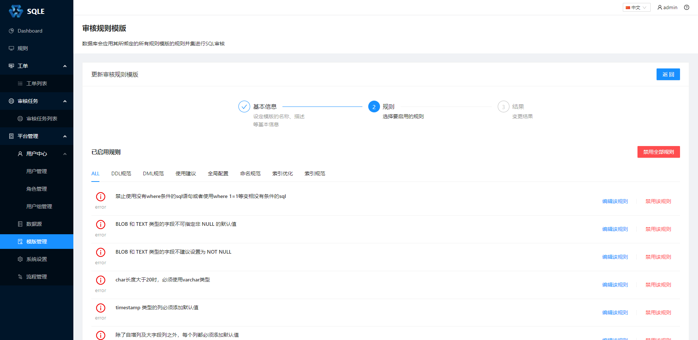
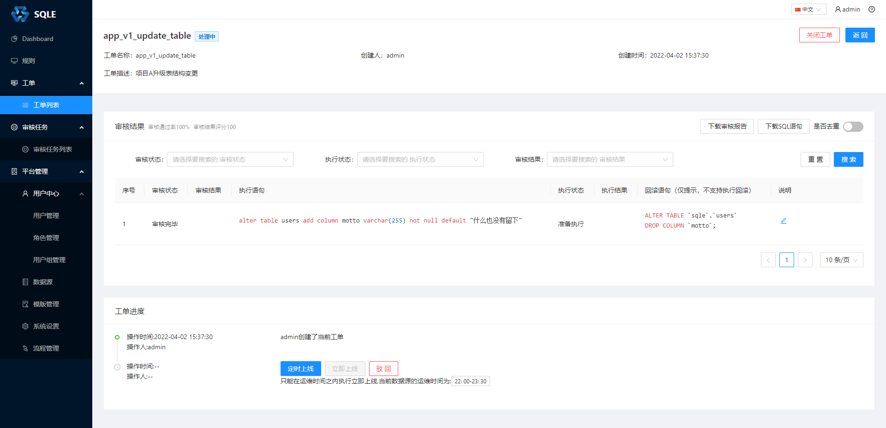
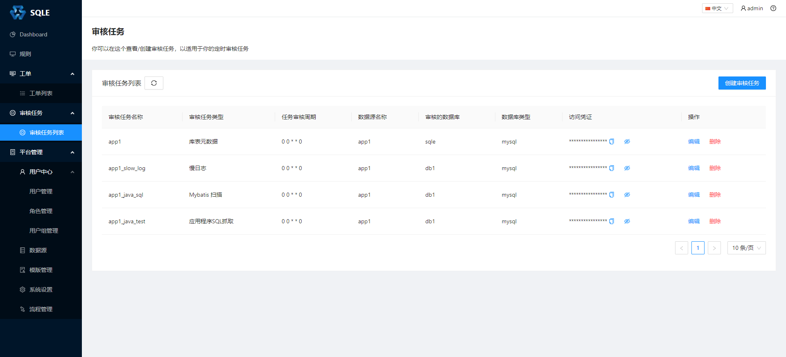
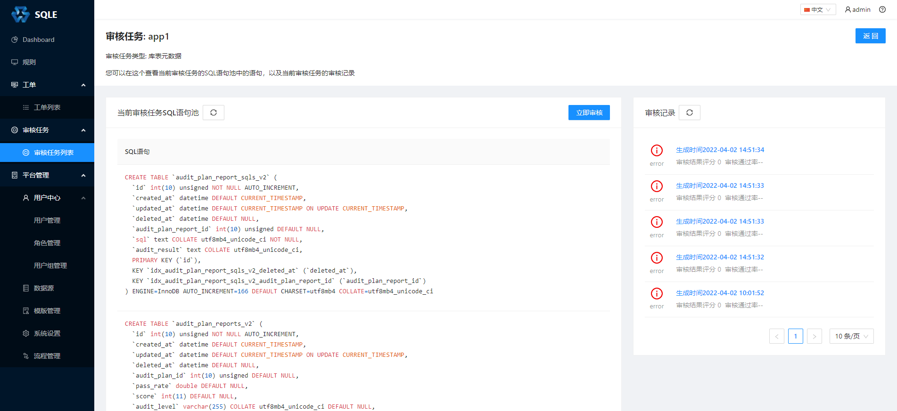
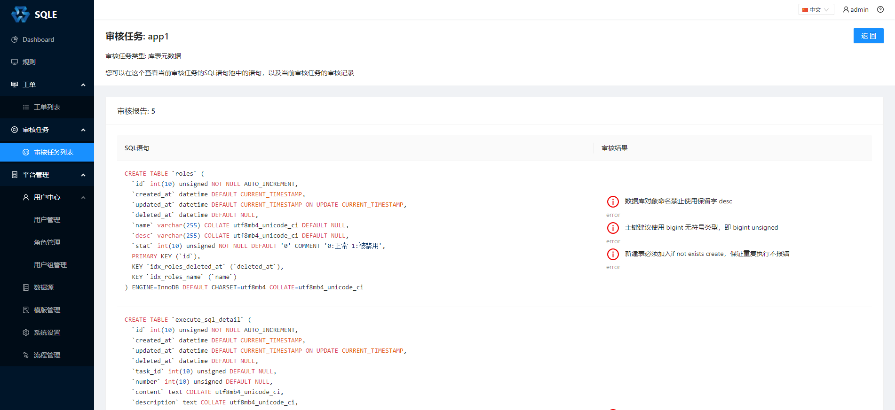

Introduction
关于 SQLE
在线体验
产品展示
安装部署
源码安装
RPM 部署
Docker 部署
开始使用
功能模块
权限管理
角色管理
用户管理
数据源管理
模板管理
规则模板管理
流程模板管理
白名单管理
审核工单
审核工单管理
Online DDL
索引优化
审核任务
审核任务介绍
审核任务管理
Scanner 使用说明
数据库审核插件
数据库审核插件使用
数据库审核插件开发
系统设置
LDAP配置
邮箱配置
FAQ
安装启用常见问题
回滚语句常见问题
Published with GitBook
产品展示
产品展示
登录界面

dashboard 界面

审核规则界面
规则列表
可以为不同的项目配置不同的规则集 
修改规则集

工单界面
工单列表
工单详情

审核任务界面
审核任务列表

审核任务SQL集

审核任务审核报告

results matching "
"
No results matching "
"